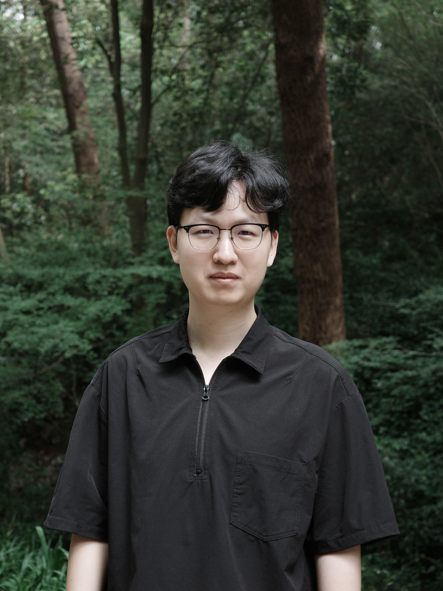

Ph.D. Student,
The Chinese University of Hong Kong
Email: chaohaoyuan (at) link (dot) cuhk (dot) edu (dot) hk
GitHub / Google Scholar

Bio
I am currently a Ph.D. student in Systems Engineering and Engineering Management at The Chinese University of Hong Kong, supervised by Prof. Hong Cheng. Previously, I earned my master’s degree in Data Science and Information Technology from Tsinghua University, advised by Prof. Ercan Engin Kuruoglu, and my B.S. from Zhejiang University. Since 2023, I have also been fortunate to receive mentorship from Dr. Yu Rong during my research internships at Tencent AI Lab and DAMO Academy of Alibaba Group, spanning my master’s and doctoral studies. I am grateful to my mentors for their guidance and support throughout my research journey.
Research
My research lies at the intersection of scientific foundation models and large language models, with the goal of building AI systems that can both model scientific phenomena and reason with scientific knowledge. My work spans graph representation learning, dynamical systems, biological foundation models, and LLM reasoning. Across these areas, I study how models can capture complex structure and dynamics, connect information across modalities, and develop stronger reasoning capabilities.
Looking ahead, I am interested in bringing these capabilities together: using scientific foundation models to ground LLM reasoning in domain-specific data and predictions, while using LLMs to incorporate scientific knowledge, formulate hypotheses, and guide further investigation. Virtual cells and biological discovery provide a concrete setting for pursuing this broader direction.
Recently, my research has focused more on AI agents, reinforcement learning, and virtual cells.
Recent News
- [Aug 2026] Our paper Pixel Linguist II is accepted to EMNLP 2026!
- [Aug 2026] Our Graph Transformer Survey published in ACM Computing Surveys!
- [Jul 2026] Our paper Lingshu-Cell is accepted to WAICA 2026!
- [Apr 2026] Our paper Understanding the Behaviors of Environment-aware Information Retrieval is accepted to ACL 2026!
- [Jan 2026] I received the 2025 Annual Outstanding Intern Award at DAMO Academy of Alibaba Group (Top 5%)!
- [Oct 2025] Our paper ParaFormer is accepted to WSDM 2026 (Oral)!
Selected Publications [Full List]
-
Lingshu-Cell: A generative cellular world model for transcriptome modeling toward virtual cells
Han Zhang*, Guo-Hua Yuan*, Chaohao Yuan*, Tingyang Xu, Tian Bian, Hong Cheng, Wenbing Huang, Deli Zhao, Yu Rong.
DAMO Academy of Alibaba Group Technical Report; World Artificial Intelligence Conference · Academic (WAICA) 2026.
-
On the Design Fundamentals of Pixel Text Representation Learning
Chaohao Yuan*, Ruifeng Yuan*, Zhuoxu Huang*, Yu Rong, Hong Cheng, Hou Pong Chan, Chenghao Xiao.
Conference on Empirical Methods in Natural Language Processing (EMNLP) 2026.
-
A Survey of Graph Transformers: Architectures, Theories and Applications
Chaohao Yuan, Kangfei Zhao, Ercan Engin Kuruoglu, Liang Wang, Tingyang Xu, Wenbing Huang, Deli Zhao, Hong Cheng, Yu Rong.
ACM Computing Surveys, 2026.
-
Understanding the Behaviors of Environment-aware Information Retrieval
Ruifeng Yuan*, Chaohao Yuan*, David Dai*, Yu Rong, Hong Cheng, Hou Pong Chan, Chenghao Xiao.
Annual Meeting of the Association for Computational Linguistics (ACL) 2026.
-
Decouple before Integration: Test-time Synthesis of SFT and RLVR Task Vectors
Chaohao Yuan, Chenghao Xiao, Yu Rong, Hong Cheng, Long-Kai Huang.
Preprint, arXiv:2605.00610, 2026.
-
ParaFormer: A Generalized PageRank Graph Transformer for Graph Representation Learning
Chaohao Yuan, Zhenjie Song, Ercan Engin Kuruoglu, Kangfei Zhao, Yang Liu, Deli Zhao, Hong Cheng, Yu Rong.
ACM International Conference on Web Search and Data Mining (WSDM) 2026 Oral.
-
Chapter: Transformer and Drug Discovery
Chaohao Yuan, Tingyang Xu, Yu Rong.
Elsevier Book: Deep Learning in Drug Design.
-
Non-stationary Equivariant Graph Neural Networks for Physical Dynamics Simulation
Chaohao Yuan*, Maoji Wen*, Ercan Engin Kuruoglu, Yang Liu, Jia Li, Tingyang Xu, Deli Zhao, Hong Cheng, Yu Rong.
Conference on Neural Information Processing Systems (NeurIPS) 2025.
-
Annotation-guided Protein Design with Multi-Level Domain Alignment
Chaohao Yuan, Songyou Li, Geyan Ye, Yikun Zhang, Long-Kai Huang, Wenbing Huang, Wei Liu, Jianhua Yao, Yu Rong.
ACM SIGKDD Conference on Knowledge Discovery and Data Mining (KDD) 2025.
Services
Conference Reviewer:- International Conference on Machine Learning (ICML) (2025, 2026)
- Conference on Neural Information Processing Systems (NeurIPS) (2024, 2025, 2026)
- International Conference on Learning Representations (ICLR) (2025, 2026, 2027)
- ACM SIGKDD Conference on Knowledge Discovery and Data Mining (SIGKDD) (2024)
Award: ICLR 2025 Notable Reviewer.
Teaching
Teaching Assistant: CUHK, ENGG 2760C, Probability Theory, 2025 Fall.
Teaching Assistant: CUHK, SEEM 3440, Fundamentals in Information Systems, 2026 Spring.